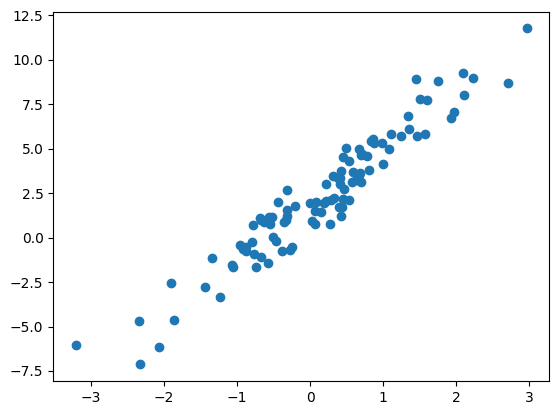
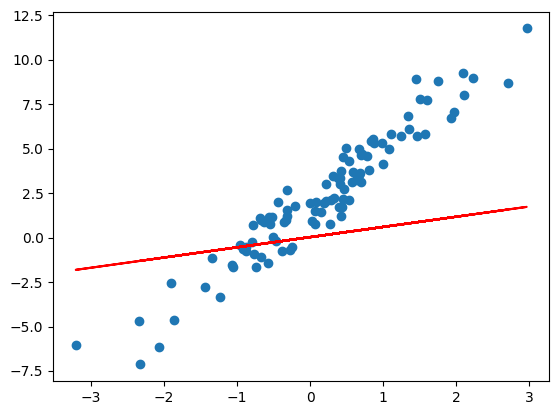
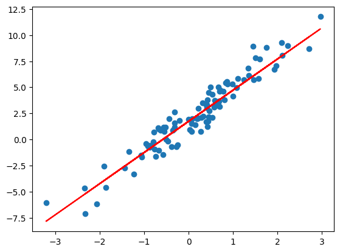
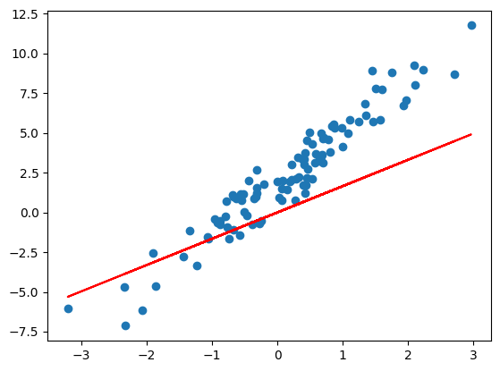
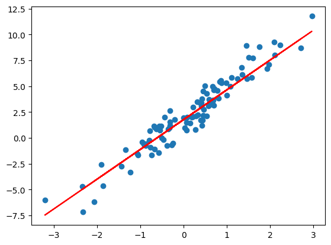

<!DOCTYPE html>


<html lang="en" data-content_root="../" >

  <head>
    <meta charset="utf-8" />
    <meta name="viewport" content="width=device-width, initial-scale=1.0" /><meta name="viewport" content="width=device-width, initial-scale=1" />

    <title>&lt;no title&gt; &#8212; JoyCode</title>
  
  
  
  <script data-cfasync="false">
    document.documentElement.dataset.mode = localStorage.getItem("mode") || "";
    document.documentElement.dataset.theme = localStorage.getItem("theme") || "light";
  </script>
  
  <!-- Loaded before other Sphinx assets -->
  <link href="../_static/styles/theme.css?digest=8d27b9dea8ad943066ae" rel="stylesheet" />
<link href="../_static/styles/bootstrap.css?digest=8d27b9dea8ad943066ae" rel="stylesheet" />
<link href="../_static/styles/pydata-sphinx-theme.css?digest=8d27b9dea8ad943066ae" rel="stylesheet" />

  
  <link href="../_static/vendor/fontawesome/6.5.1/css/all.min.css?digest=8d27b9dea8ad943066ae" rel="stylesheet" />
  <link rel="preload" as="font" type="font/woff2" crossorigin href="../_static/vendor/fontawesome/6.5.1/webfonts/fa-solid-900.woff2" />
<link rel="preload" as="font" type="font/woff2" crossorigin href="../_static/vendor/fontawesome/6.5.1/webfonts/fa-brands-400.woff2" />
<link rel="preload" as="font" type="font/woff2" crossorigin href="../_static/vendor/fontawesome/6.5.1/webfonts/fa-regular-400.woff2" />

    <link rel="stylesheet" type="text/css" href="../_static/pygments.css?v=fa44fd50" />
    <link rel="stylesheet" type="text/css" href="../_static/styles/sphinx-book-theme.css?v=384b581d" />
    <link rel="stylesheet" type="text/css" href="../_static/togglebutton.css?v=13237357" />
    <link rel="stylesheet" type="text/css" href="../_static/copybutton.css?v=76b2166b" />
    <link rel="stylesheet" type="text/css" href="../_static/mystnb.4510f1fc1dee50b3e5859aac5469c37c29e427902b24a333a5f9fcb2f0b3ac41.css" />
    <link rel="stylesheet" type="text/css" href="../_static/sphinx-thebe.css?v=4fa983c6" />
    <link rel="stylesheet" type="text/css" href="../_static/design-style.1e8bd061cd6da7fc9cf755528e8ffc24.min.css?v=0a3b3ea7" />
  
  <!-- Pre-loaded scripts that we'll load fully later -->
  <link rel="preload" as="script" href="../_static/scripts/bootstrap.js?digest=8d27b9dea8ad943066ae" />
<link rel="preload" as="script" href="../_static/scripts/pydata-sphinx-theme.js?digest=8d27b9dea8ad943066ae" />
  <script src="../_static/vendor/fontawesome/6.5.1/js/all.min.js?digest=8d27b9dea8ad943066ae"></script>

    <script src="../_static/documentation_options.js?v=9eb32ce0"></script>
    <script src="../_static/doctools.js?v=9a2dae69"></script>
    <script src="../_static/sphinx_highlight.js?v=dc90522c"></script>
    <script src="../_static/clipboard.min.js?v=a7894cd8"></script>
    <script src="../_static/copybutton.js?v=f281be69"></script>
    <script src="../_static/scripts/sphinx-book-theme.js?v=efea14e4"></script>
    <script>let toggleHintShow = 'Click to show';</script>
    <script>let toggleHintHide = 'Click to hide';</script>
    <script>let toggleOpenOnPrint = 'true';</script>
    <script src="../_static/togglebutton.js?v=4a39c7ea"></script>
    <script>var togglebuttonSelector = '.toggle, .admonition.dropdown';</script>
    <script src="../_static/design-tabs.js?v=36754332"></script>
    <script>const THEBE_JS_URL = "https://unpkg.com/thebe@0.8.2/lib/index.js"; const thebe_selector = ".thebe,.cell"; const thebe_selector_input = "pre"; const thebe_selector_output = ".output, .cell_output"</script>
    <script async="async" src="../_static/sphinx-thebe.js?v=c100c467"></script>
    <script>var togglebuttonSelector = '.toggle, .admonition.dropdown';</script>
    <script>const THEBE_JS_URL = "https://unpkg.com/thebe@0.8.2/lib/index.js"; const thebe_selector = ".thebe,.cell"; const thebe_selector_input = "pre"; const thebe_selector_output = ".output, .cell_output"</script>
    <script>DOCUMENTATION_OPTIONS.pagename = '01-机器学习&深度学习/TensorFlow2.0实现线性回归';</script>
    <link rel="index" title="Index" href="../genindex.html" />
    <link rel="search" title="Search" href="../search.html" />
  <meta name="viewport" content="width=device-width, initial-scale=1"/>
  <meta name="docsearch:language" content="en"/>
  </head>
  
  
  <body data-bs-spy="scroll" data-bs-target=".bd-toc-nav" data-offset="180" data-bs-root-margin="0px 0px -60%" data-default-mode="">

  
  
  <a id="pst-skip-link" class="skip-link" href="#main-content">Skip to main content</a>
  
  <div id="pst-scroll-pixel-helper"></div>
  
  <button type="button" class="btn rounded-pill" id="pst-back-to-top">
    <i class="fa-solid fa-arrow-up"></i>
    Back to top
  </button>

  
  <input type="checkbox"
          class="sidebar-toggle"
          name="__primary"
          id="__primary"/>
  <label class="overlay overlay-primary" for="__primary"></label>
  
  <input type="checkbox"
          class="sidebar-toggle"
          name="__secondary"
          id="__secondary"/>
  <label class="overlay overlay-secondary" for="__secondary"></label>
  
  <div class="search-button__wrapper">
    <div class="search-button__overlay"></div>
    <div class="search-button__search-container">
<form class="bd-search d-flex align-items-center"
      action="../search.html"
      method="get">
  <i class="fa-solid fa-magnifying-glass"></i>
  <input type="search"
         class="form-control"
         name="q"
         id="search-input"
         placeholder="Search this book..."
         aria-label="Search this book..."
         autocomplete="off"
         autocorrect="off"
         autocapitalize="off"
         spellcheck="false"/>
  <span class="search-button__kbd-shortcut"><kbd class="kbd-shortcut__modifier">Ctrl</kbd>+<kbd>K</kbd></span>
</form></div>
  </div>
  
    <header class="bd-header navbar navbar-expand-lg bd-navbar">
    </header>
  

  <div class="bd-container">
    <div class="bd-container__inner bd-page-width">
      
      
      
        
      
      <div class="bd-sidebar-primary bd-sidebar">
        

  
  <div class="sidebar-header-items sidebar-primary__section">
    
    
    
    
  </div>
  
    <div class="sidebar-primary-items__start sidebar-primary__section">
        <div class="sidebar-primary-item">

  

<a class="navbar-brand logo" href="../intro.html">
  
  
  
  
  
  
    <p class="title logo__title">JoyCode</p>
  
</a></div>
        <div class="sidebar-primary-item">

 <script>
 document.write(`
   <button class="btn navbar-btn search-button-field search-button__button" title="Search" aria-label="Search" data-bs-placement="bottom" data-bs-toggle="tooltip">
    <i class="fa-solid fa-magnifying-glass"></i>
    <span class="search-button__default-text">Search</span>
    <span class="search-button__kbd-shortcut"><kbd class="kbd-shortcut__modifier">Ctrl</kbd>+<kbd class="kbd-shortcut__modifier">K</kbd></span>
   </button>
 `);
 </script></div>
        <div class="sidebar-primary-item"><nav class="bd-links bd-docs-nav" aria-label="Main">
    <div class="bd-toc-item navbar-nav active">
        
        <ul class="nav bd-sidenav bd-sidenav__home-link">
            <li class="toctree-l1">
                <a class="reference internal" href="../intro.html">
                    欢迎访问JoyCode
                </a>
            </li>
        </ul>
        <ul class="nav bd-sidenav">
<li class="toctree-l1"><a class="reference internal" href="%E6%9C%BA%E5%99%A8%E5%AD%A6%E4%B9%A0%26%E6%B7%B1%E5%BA%A6%E5%AD%A6%E4%B9%A001-%E9%80%BB%E8%BE%91%E5%9B%9E%E5%BD%92%E7%AE%97%E6%B3%95.html">机器学习&amp;深度学习01-逻辑回归算法</a></li>
<li class="toctree-l1"><a class="reference internal" href="%E6%9C%BA%E5%99%A8%E5%AD%A6%E4%B9%A0%26%E6%B7%B1%E5%BA%A6%E5%AD%A6%E4%B9%A002-K%E8%BF%91%E9%82%BB%E7%AE%97%E6%B3%95.html">机器学习&amp;深度学习02-K近邻算法</a></li>
<li class="toctree-l1"><a class="reference internal" href="%E6%9C%BA%E5%99%A8%E5%AD%A6%E4%B9%A0%26%E6%B7%B1%E5%BA%A6%E5%AD%A6%E4%B9%A003-K-Means%E8%81%9A%E7%B1%BB%E7%AE%97%E6%B3%95.html">机器学习&amp;深度学习03-K-Means聚类算法</a></li>
<li class="toctree-l1"><a class="reference internal" href="%E6%9C%BA%E5%99%A8%E5%AD%A6%E4%B9%A0%26%E6%B7%B1%E5%BA%A6%E5%AD%A6%E4%B9%A004-K-Means%2B%2B%E8%81%9A%E7%B1%BB%E7%AE%97%E6%B3%95.html">机器学习&amp;深度学习04-K-Means++聚类算法</a></li>
<li class="toctree-l1"><a class="reference internal" href="%E6%9C%BA%E5%99%A8%E5%AD%A6%E4%B9%A0%26%E6%B7%B1%E5%BA%A6%E5%AD%A6%E4%B9%A005-%E5%88%86%E7%B1%BB%E6%A8%A1%E5%9E%8B%E8%AF%84%E4%BC%B0%E6%96%B9%E6%B3%95.html">机器学习&amp;深度学习05-分类模型评估方法</a></li>
<li class="toctree-l1"><a class="reference internal" href="../02-%E6%8E%A8%E8%8D%90%E7%B3%BB%E7%BB%9F/%E6%8E%A8%E8%8D%90%E7%B3%BB%E7%BB%9F01-%E6%8E%A8%E8%8D%90%26%E5%B9%BF%E5%91%8A%E9%A2%86%E5%9F%9F%E5%B8%B8%E8%A7%81%E7%9A%84%E4%B8%9A%E5%8A%A1%E6%8C%87%E6%A0%87.html">推荐系统01-推荐&amp;广告领域常见的业务指标</a></li>
<li class="toctree-l1"><a class="reference internal" href="../02-%E6%8E%A8%E8%8D%90%E7%B3%BB%E7%BB%9F/%E6%8E%A8%E8%8D%90%E7%B3%BB%E7%BB%9F02-%E6%8A%80%E6%9C%AF%E5%9F%BA%E7%A1%80.html">推荐系统02-技术基础</a></li>
<li class="toctree-l1"><a class="reference internal" href="../02-%E6%8E%A8%E8%8D%90%E7%B3%BB%E7%BB%9F/%E6%8E%A8%E8%8D%90%E7%B3%BB%E7%BB%9F03-%E5%8F%8C%E5%A1%94%E6%A8%A1%E5%9E%8B%E4%BC%98%E5%8C%96%E6%80%9D%E8%B7%AF.html">推荐系统03-双塔模型优化思路</a></li>
<li class="toctree-l1"><a class="reference internal" href="../02-%E6%8E%A8%E8%8D%90%E7%B3%BB%E7%BB%9F/%E6%8E%A8%E8%8D%90%E7%B3%BB%E7%BB%9F04-%E5%BA%8F%E5%88%97%E7%89%B9%E5%BE%81%E4%BC%98%E5%8C%96%E6%96%B9%E6%A1%88.html">推荐系统04-序列特征优化方案</a></li>
<li class="toctree-l1"><a class="reference internal" href="../02-%E6%8E%A8%E8%8D%90%E7%B3%BB%E7%BB%9F/%E6%8E%A8%E8%8D%90%E7%B3%BB%E7%BB%9F05-%E5%A4%9A%E7%9B%AE%E6%A0%87%E4%B8%8E%E5%A4%9A%E5%9C%BA%E6%99%AF%E5%BB%BA%E6%A8%A1.html">推荐系统05-多目标与多场景建模</a></li>
<li class="toctree-l1"><a class="reference internal" href="../02-%E6%8E%A8%E8%8D%90%E7%B3%BB%E7%BB%9F/%E6%8E%A8%E8%8D%90%E7%B3%BB%E7%BB%9F06-%E7%89%B9%E5%BE%81%E4%BA%A4%E5%8F%89.html">推荐系统06-特征交叉</a></li>
<li class="toctree-l1"><a class="reference internal" href="../02-%E6%8E%A8%E8%8D%90%E7%B3%BB%E7%BB%9F/%E6%8E%A8%E8%8D%90%E7%B3%BB%E7%BB%9F08-%E5%9B%BE%E7%A5%9E%E7%BB%8F%E7%BD%91%E7%BB%9C.html">推荐系统08-图神经网络</a></li>
</ul>

    </div>
</nav></div>
    </div>
  
  
  <div class="sidebar-primary-items__end sidebar-primary__section">
  </div>
  
  <div id="rtd-footer-container"></div>


      </div>
      
      <main id="main-content" class="bd-main">
        
        

<div class="sbt-scroll-pixel-helper"></div>

          <div class="bd-content">
            <div class="bd-article-container">
              
              <div class="bd-header-article">
<div class="header-article-items header-article__inner">
  
    <div class="header-article-items__start">
      
        <div class="header-article-item"><label class="sidebar-toggle primary-toggle btn btn-sm" for="__primary" title="Toggle primary sidebar" data-bs-placement="bottom" data-bs-toggle="tooltip">
  <span class="fa-solid fa-bars"></span>
</label></div>
      
    </div>
  
  
    <div class="header-article-items__end">
      
        <div class="header-article-item">

<div class="article-header-buttons">


<div class="dropdown dropdown-source-buttons">
  <button class="btn dropdown-toggle" type="button" data-bs-toggle="dropdown" aria-expanded="false" aria-label="Source repositories">
    <i class="fab fa-github"></i>
  </button>
  <ul class="dropdown-menu">
      
      
      
      <li><a href="https://github.com/yilonghao/joycode-book" target="_blank"
   class="btn btn-sm btn-source-repository-button dropdown-item"
   title="Source repository"
   data-bs-placement="left" data-bs-toggle="tooltip"
>
  

<span class="btn__icon-container">
  <i class="fab fa-github"></i>
  </span>
<span class="btn__text-container">Repository</span>
</a>
</li>
      
      
      
      
      <li><a href="https://github.com/yilonghao/joycode-book/issues/new?title=Issue%20on%20page%20%2F01-机器学习&深度学习/TensorFlow2.0实现线性回归.html&body=Your%20issue%20content%20here." target="_blank"
   class="btn btn-sm btn-source-issues-button dropdown-item"
   title="Open an issue"
   data-bs-placement="left" data-bs-toggle="tooltip"
>
  

<span class="btn__icon-container">
  <i class="fas fa-lightbulb"></i>
  </span>
<span class="btn__text-container">Open issue</span>
</a>
</li>
      
  </ul>
</div>


<div class="dropdown dropdown-download-buttons">
  <button class="btn dropdown-toggle" type="button" data-bs-toggle="dropdown" aria-expanded="false" aria-label="Download this page">
    <i class="fas fa-download"></i>
  </button>
  <ul class="dropdown-menu">
      
      
      
      <li><a href="../_sources/01-机器学习&深度学习/TensorFlow2.0实现线性回归.ipynb" target="_blank"
   class="btn btn-sm btn-download-source-button dropdown-item"
   title="Download source file"
   data-bs-placement="left" data-bs-toggle="tooltip"
>
  

<span class="btn__icon-container">
  <i class="fas fa-file"></i>
  </span>
<span class="btn__text-container">.ipynb</span>
</a>
</li>
      
      
      
      
      <li>
<button onclick="window.print()"
  class="btn btn-sm btn-download-pdf-button dropdown-item"
  title="Print to PDF"
  data-bs-placement="left" data-bs-toggle="tooltip"
>
  

<span class="btn__icon-container">
  <i class="fas fa-file-pdf"></i>
  </span>
<span class="btn__text-container">.pdf</span>
</button>
</li>
      
  </ul>
</div>


<button onclick="toggleFullScreen()"
  class="btn btn-sm btn-fullscreen-button"
  title="Fullscreen mode"
  data-bs-placement="bottom" data-bs-toggle="tooltip"
>
  

<span class="btn__icon-container">
  <i class="fas fa-expand"></i>
  </span>

</button>


<script>
document.write(`
  <button class="btn btn-sm navbar-btn theme-switch-button" title="light/dark" aria-label="light/dark" data-bs-placement="bottom" data-bs-toggle="tooltip">
    <span class="theme-switch nav-link" data-mode="light"><i class="fa-solid fa-sun fa-lg"></i></span>
    <span class="theme-switch nav-link" data-mode="dark"><i class="fa-solid fa-moon fa-lg"></i></span>
    <span class="theme-switch nav-link" data-mode="auto"><i class="fa-solid fa-circle-half-stroke fa-lg"></i></span>
  </button>
`);
</script>


<script>
document.write(`
  <button class="btn btn-sm navbar-btn search-button search-button__button" title="Search" aria-label="Search" data-bs-placement="bottom" data-bs-toggle="tooltip">
    <i class="fa-solid fa-magnifying-glass fa-lg"></i>
  </button>
`);
</script>
<label class="sidebar-toggle secondary-toggle btn btn-sm" for="__secondary"title="Toggle secondary sidebar" data-bs-placement="bottom" data-bs-toggle="tooltip">
    <span class="fa-solid fa-list"></span>
</label>
</div></div>
      
    </div>
  
</div>
</div>
              
              

<div id="jb-print-docs-body" class="onlyprint">
    <h1><no title></h1>
    <!-- Table of contents -->
    <div id="print-main-content">
        <div id="jb-print-toc">
            
            <div>
                <h2> Contents </h2>
            </div>
            <nav aria-label="Page">
                <ul class="simple visible nav section-nav flex-column">
</ul>

            </nav>
        </div>
    </div>
</div>

              
                
<div id="searchbox"></div>
                <article class="bd-article">
                  
  <h1>Table of Contents<span class="tocSkip"></span></h1>
<div class="toc"><ul class="toc-item"></ul></div><div class="cell docutils container">
<div class="cell_input docutils container">
<div class="highlight-ipython3 notranslate"><div class="highlight"><pre><span></span><span class="kn">import</span> <span class="nn">matplotlib.pyplot</span> <span class="k">as</span> <span class="nn">plt</span>
<span class="kn">import</span> <span class="nn">tensorflow</span> <span class="k">as</span> <span class="nn">tf</span>
<span class="o">%</span><span class="k">matplotlib</span> inline

<span class="n">TRUE_W</span> <span class="o">=</span> <span class="mf">3.0</span>
<span class="n">TRUE_b</span> <span class="o">=</span> <span class="mf">2.0</span>
<span class="n">NUM_SAMPLES</span> <span class="o">=</span> <span class="mi">100</span>

<span class="c1"># 初始化随机数据</span>
<span class="n">X</span> <span class="o">=</span> <span class="n">tf</span><span class="o">.</span><span class="n">random</span><span class="o">.</span><span class="n">normal</span><span class="p">(</span><span class="n">shape</span><span class="o">=</span><span class="p">[</span><span class="n">NUM_SAMPLES</span><span class="p">,</span> <span class="mi">1</span><span class="p">])</span><span class="o">.</span><span class="n">numpy</span><span class="p">()</span>
<span class="n">noise</span> <span class="o">=</span> <span class="n">tf</span><span class="o">.</span><span class="n">random</span><span class="o">.</span><span class="n">normal</span><span class="p">(</span><span class="n">shape</span><span class="o">=</span><span class="p">[</span><span class="n">NUM_SAMPLES</span><span class="p">,</span> <span class="mi">1</span><span class="p">])</span><span class="o">.</span><span class="n">numpy</span><span class="p">()</span>
<span class="n">y</span> <span class="o">=</span> <span class="n">X</span> <span class="o">*</span> <span class="n">TRUE_W</span> <span class="o">+</span> <span class="n">TRUE_b</span> <span class="o">+</span> <span class="n">noise</span>  <span class="c1"># 添加噪声</span>

<span class="n">plt</span><span class="o">.</span><span class="n">scatter</span><span class="p">(</span><span class="n">X</span><span class="p">,</span> <span class="n">y</span><span class="p">)</span>
</pre></div>
</div>
</div>
<div class="cell_output docutils container">
<div class="output stderr highlight-myst-ansi notranslate"><div class="highlight"><pre><span></span>/Users/yilonghao/Library/Python/3.9/lib/python/site-packages/urllib3/__init__.py:34: NotOpenSSLWarning: urllib3 v2.0 only supports OpenSSL 1.1.1+, currently the &#39;ssl&#39; module is compiled with &#39;LibreSSL 2.8.3&#39;. See: https://github.com/urllib3/urllib3/issues/3020
  warnings.warn(
</pre></div>
</div>
<div class="output text_plain highlight-myst-ansi notranslate"><div class="highlight"><pre><span></span>&lt;matplotlib.collections.PathCollection at 0x289cd2fd0&gt;
</pre></div>
</div>

</div>
</div>
<div class="cell docutils container">
<div class="cell_input docutils container">
<div class="highlight-ipython3 notranslate"><div class="highlight"><pre><span></span><span class="k">class</span> <span class="nc">Model</span><span class="p">(</span><span class="nb">object</span><span class="p">):</span>
    <span class="k">def</span> <span class="fm">__init__</span><span class="p">(</span><span class="bp">self</span><span class="p">):</span>
        <span class="bp">self</span><span class="o">.</span><span class="n">W</span> <span class="o">=</span> <span class="n">tf</span><span class="o">.</span><span class="n">Variable</span><span class="p">(</span><span class="n">tf</span><span class="o">.</span><span class="n">random</span><span class="o">.</span><span class="n">uniform</span><span class="p">([</span><span class="mi">1</span><span class="p">]))</span>  <span class="c1"># 随机初始化参数</span>
        <span class="bp">self</span><span class="o">.</span><span class="n">b</span> <span class="o">=</span> <span class="n">tf</span><span class="o">.</span><span class="n">Variable</span><span class="p">(</span><span class="n">tf</span><span class="o">.</span><span class="n">random</span><span class="o">.</span><span class="n">uniform</span><span class="p">([</span><span class="mi">1</span><span class="p">]))</span>

    <span class="k">def</span> <span class="fm">__call__</span><span class="p">(</span><span class="bp">self</span><span class="p">,</span> <span class="n">x</span><span class="p">):</span>
        <span class="k">return</span> <span class="bp">self</span><span class="o">.</span><span class="n">W</span> <span class="o">*</span> <span class="n">x</span> <span class="o">+</span> <span class="bp">self</span><span class="o">.</span><span class="n">b</span>  <span class="c1"># w*x + b</span>
</pre></div>
</div>
</div>
</div>
<div class="cell docutils container">
<div class="cell_input docutils container">
<div class="highlight-ipython3 notranslate"><div class="highlight"><pre><span></span><span class="n">model</span> <span class="o">=</span> <span class="n">Model</span><span class="p">()</span>  <span class="c1"># 实例化模型</span>

<span class="n">plt</span><span class="o">.</span><span class="n">scatter</span><span class="p">(</span><span class="n">X</span><span class="p">,</span> <span class="n">y</span><span class="p">)</span>
<span class="n">plt</span><span class="o">.</span><span class="n">plot</span><span class="p">(</span><span class="n">X</span><span class="p">,</span> <span class="n">model</span><span class="p">(</span><span class="n">X</span><span class="p">),</span> <span class="n">c</span><span class="o">=</span><span class="s1">&#39;r&#39;</span><span class="p">)</span>
</pre></div>
</div>
</div>
<div class="cell_output docutils container">
<div class="output text_plain highlight-myst-ansi notranslate"><div class="highlight"><pre><span></span>[&lt;matplotlib.lines.Line2D at 0x289e78100&gt;]
</pre></div>
</div>

</div>
</div>
<div class="cell docutils container">
<div class="cell_input docutils container">
<div class="highlight-ipython3 notranslate"><div class="highlight"><pre><span></span><span class="k">def</span> <span class="nf">loss_fn</span><span class="p">(</span><span class="n">model</span><span class="p">,</span> <span class="n">x</span><span class="p">,</span> <span class="n">y</span><span class="p">):</span>
    <span class="n">y_</span> <span class="o">=</span> <span class="n">model</span><span class="p">(</span><span class="n">x</span><span class="p">)</span>
    <span class="k">return</span> <span class="n">tf</span><span class="o">.</span><span class="n">reduce_mean</span><span class="p">(</span><span class="n">tf</span><span class="o">.</span><span class="n">square</span><span class="p">(</span><span class="n">y_</span> <span class="o">-</span> <span class="n">y</span><span class="p">))</span>
</pre></div>
</div>
</div>
</div>
<div class="cell docutils container">
<div class="cell_input docutils container">
<div class="highlight-ipython3 notranslate"><div class="highlight"><pre><span></span><span class="n">EPOCHS</span> <span class="o">=</span> <span class="mi">10</span>
<span class="n">LEARNING_RATE</span> <span class="o">=</span> <span class="mf">0.1</span>

<span class="k">for</span> <span class="n">epoch</span> <span class="ow">in</span> <span class="nb">range</span><span class="p">(</span><span class="n">EPOCHS</span><span class="p">):</span>  <span class="c1"># 迭代次数</span>
    <span class="k">with</span> <span class="n">tf</span><span class="o">.</span><span class="n">GradientTape</span><span class="p">()</span> <span class="k">as</span> <span class="n">tape</span><span class="p">:</span>  <span class="c1"># 追踪梯度</span>
        <span class="n">loss</span> <span class="o">=</span> <span class="n">loss_fn</span><span class="p">(</span><span class="n">model</span><span class="p">,</span> <span class="n">X</span><span class="p">,</span> <span class="n">y</span><span class="p">)</span>  <span class="c1"># 计算损失</span>
    <span class="n">dW</span><span class="p">,</span> <span class="n">db</span> <span class="o">=</span> <span class="n">tape</span><span class="o">.</span><span class="n">gradient</span><span class="p">(</span><span class="n">loss</span><span class="p">,</span> <span class="p">[</span><span class="n">model</span><span class="o">.</span><span class="n">W</span><span class="p">,</span> <span class="n">model</span><span class="o">.</span><span class="n">b</span><span class="p">])</span>  <span class="c1"># 计算梯度</span>
    <span class="n">model</span><span class="o">.</span><span class="n">W</span><span class="o">.</span><span class="n">assign_sub</span><span class="p">(</span><span class="n">LEARNING_RATE</span> <span class="o">*</span> <span class="n">dW</span><span class="p">)</span>  <span class="c1"># 更新梯度</span>
    <span class="n">model</span><span class="o">.</span><span class="n">b</span><span class="o">.</span><span class="n">assign_sub</span><span class="p">(</span><span class="n">LEARNING_RATE</span> <span class="o">*</span> <span class="n">db</span><span class="p">)</span>
    <span class="c1"># 输出计算过程</span>
    <span class="nb">print</span><span class="p">(</span><span class="s1">&#39;Epoch [</span><span class="si">{}</span><span class="s1">/</span><span class="si">{}</span><span class="s1">], loss [</span><span class="si">{:.3f}</span><span class="s1">], W/b [</span><span class="si">{:.3f}</span><span class="s1">/</span><span class="si">{:.3f}</span><span class="s1">]&#39;</span><span class="o">.</span><span class="n">format</span><span class="p">(</span><span class="n">epoch</span><span class="p">,</span> <span class="n">EPOCHS</span><span class="p">,</span> <span class="n">loss</span><span class="p">,</span>
                                                                     <span class="nb">float</span><span class="p">(</span><span class="n">model</span><span class="o">.</span><span class="n">W</span><span class="o">.</span><span class="n">numpy</span><span class="p">()),</span>
                                                                     <span class="nb">float</span><span class="p">(</span><span class="n">model</span><span class="o">.</span><span class="n">b</span><span class="o">.</span><span class="n">numpy</span><span class="p">())))</span>
</pre></div>
</div>
</div>
<div class="cell_output docutils container">
<div class="output stream highlight-myst-ansi notranslate"><div class="highlight"><pre><span></span>Epoch [0/10], loss [13.623], W/b [1.253/0.478]
Epoch [1/10], loss [7.862], W/b [1.750/0.815]
Epoch [2/10], loss [4.729], W/b [2.113/1.068]
Epoch [3/10], loss [3.024], W/b [2.379/1.258]
Epoch [4/10], loss [2.095], W/b [2.573/1.402]
Epoch [5/10], loss [1.589], W/b [2.715/1.510]
Epoch [6/10], loss [1.313], W/b [2.818/1.592]
Epoch [7/10], loss [1.162], W/b [2.893/1.654]
Epoch [8/10], loss [1.080], W/b [2.947/1.701]
Epoch [9/10], loss [1.035], W/b [2.987/1.737]
</pre></div>
</div>
</div>
</div>
<div class="cell docutils container">
<div class="cell_input docutils container">
<div class="highlight-ipython3 notranslate"><div class="highlight"><pre><span></span><span class="n">plt</span><span class="o">.</span><span class="n">scatter</span><span class="p">(</span><span class="n">X</span><span class="p">,</span> <span class="n">y</span><span class="p">)</span>
<span class="n">plt</span><span class="o">.</span><span class="n">plot</span><span class="p">(</span><span class="n">X</span><span class="p">,</span> <span class="n">model</span><span class="p">(</span><span class="n">X</span><span class="p">),</span> <span class="n">c</span><span class="o">=</span><span class="s1">&#39;r&#39;</span><span class="p">)</span>
</pre></div>
</div>
</div>
<div class="cell_output docutils container">
<div class="output text_plain highlight-myst-ansi notranslate"><div class="highlight"><pre><span></span>[&lt;matplotlib.lines.Line2D at 0x289eae940&gt;]
</pre></div>
</div>

</div>
</div>
<div class="cell docutils container">
<div class="cell_input docutils container">
<div class="highlight-ipython3 notranslate"><div class="highlight"><pre><span></span><span class="n">model</span> <span class="o">=</span> <span class="n">tf</span><span class="o">.</span><span class="n">keras</span><span class="o">.</span><span class="n">layers</span><span class="o">.</span><span class="n">Dense</span><span class="p">(</span><span class="n">units</span><span class="o">=</span><span class="mi">1</span><span class="p">)</span>  <span class="c1"># 实例化线性层</span>
<span class="n">plt</span><span class="o">.</span><span class="n">scatter</span><span class="p">(</span><span class="n">X</span><span class="p">,</span> <span class="n">y</span><span class="p">)</span>
<span class="n">plt</span><span class="o">.</span><span class="n">plot</span><span class="p">(</span><span class="n">X</span><span class="p">,</span> <span class="n">model</span><span class="p">(</span><span class="n">X</span><span class="p">),</span> <span class="n">c</span><span class="o">=</span><span class="s1">&#39;r&#39;</span><span class="p">)</span>
</pre></div>
</div>
</div>
<div class="cell_output docutils container">
<div class="output text_plain highlight-myst-ansi notranslate"><div class="highlight"><pre><span></span>[&lt;matplotlib.lines.Line2D at 0x28a031ee0&gt;]
</pre></div>
</div>

</div>
</div>
<div class="cell docutils container">
<div class="cell_input docutils container">
<div class="highlight-ipython3 notranslate"><div class="highlight"><pre><span></span><span class="n">model</span><span class="o">.</span><span class="n">variables</span>
</pre></div>
</div>
</div>
<div class="cell_output docutils container">
<div class="output text_plain highlight-myst-ansi notranslate"><div class="highlight"><pre><span></span>[&lt;KerasVariable shape=(1, 1), dtype=float32, path=dense/kernel&gt;,
 &lt;KerasVariable shape=(1,), dtype=float32, path=dense/bias&gt;]
</pre></div>
</div>
</div>
</div>
<div class="cell docutils container">
<div class="cell_input docutils container">
<div class="highlight-ipython3 notranslate"><div class="highlight"><pre><span></span><span class="nb">print</span><span class="p">(</span><span class="n">tf</span><span class="o">.</span><span class="n">__version__</span><span class="p">)</span>
</pre></div>
</div>
</div>
<div class="cell_output docutils container">
<div class="output stream highlight-myst-ansi notranslate"><div class="highlight"><pre><span></span>2.16.1
</pre></div>
</div>
</div>
</div>
<div class="cell docutils container">
<div class="cell_input docutils container">
<div class="highlight-ipython3 notranslate"><div class="highlight"><pre><span></span><span class="n">EPOCHS</span> <span class="o">=</span> <span class="mi">10</span>
<span class="n">LEARNING_RATE</span> <span class="o">=</span> <span class="mf">0.1</span>
<span class="k">for</span> <span class="n">epoch</span> <span class="ow">in</span> <span class="nb">range</span><span class="p">(</span><span class="n">EPOCHS</span><span class="p">):</span>  <span class="c1"># 迭代次数</span>
    <span class="k">with</span> <span class="n">tf</span><span class="o">.</span><span class="n">GradientTape</span><span class="p">()</span> <span class="k">as</span> <span class="n">tape</span><span class="p">:</span>  <span class="c1"># 追踪梯度</span>
        <span class="n">y_</span> <span class="o">=</span> <span class="n">model</span><span class="p">(</span><span class="n">X</span><span class="p">)</span>
        <span class="n">loss</span> <span class="o">=</span> <span class="n">tf</span><span class="o">.</span><span class="n">reduce_sum</span><span class="p">(</span><span class="n">tf</span><span class="o">.</span><span class="n">compat</span><span class="o">.</span><span class="n">v1</span><span class="o">.</span><span class="n">losses</span><span class="o">.</span><span class="n">mean_squared_error</span><span class="p">(</span><span class="n">y</span><span class="p">,</span> <span class="n">y_</span><span class="p">))</span>
    <span class="n">grads</span> <span class="o">=</span> <span class="n">tape</span><span class="o">.</span><span class="n">gradient</span><span class="p">(</span><span class="n">loss</span><span class="p">,</span> <span class="n">model</span><span class="o">.</span><span class="n">variables</span><span class="p">)</span>  <span class="c1"># 计算梯度</span>
    <span class="n">optimizer</span> <span class="o">=</span> <span class="n">tf</span><span class="o">.</span><span class="n">keras</span><span class="o">.</span><span class="n">optimizers</span><span class="o">.</span><span class="n">SGD</span><span class="p">(</span><span class="n">LEARNING_RATE</span><span class="p">)</span>  <span class="c1"># 随机梯度下降</span>
    <span class="n">optimizer</span><span class="o">.</span><span class="n">apply_gradients</span><span class="p">(</span><span class="nb">zip</span><span class="p">(</span><span class="n">grads</span><span class="p">,</span> <span class="n">model</span><span class="o">.</span><span class="n">variables</span><span class="p">))</span>  <span class="c1"># 更新梯度</span>

    <span class="nb">print</span><span class="p">(</span><span class="s1">&#39;Epoch [</span><span class="si">{}</span><span class="s1">/</span><span class="si">{}</span><span class="s1">], loss [</span><span class="si">{:.3f}</span><span class="s1">]&#39;</span><span class="o">.</span><span class="n">format</span><span class="p">(</span><span class="n">epoch</span><span class="p">,</span> <span class="n">EPOCHS</span><span class="p">,</span> <span class="n">loss</span><span class="p">))</span>
</pre></div>
</div>
</div>
<div class="cell_output docutils container">
<div class="output stream highlight-myst-ansi notranslate"><div class="highlight"><pre><span></span>Epoch [0/10], loss [7.837]
</pre></div>
</div>
<div class="output stream highlight-myst-ansi notranslate"><div class="highlight"><pre><span></span>Epoch [1/10], loss [4.810]
Epoch [2/10], loss [3.131]
Epoch [3/10], loss [2.196]
Epoch [4/10], loss [1.672]
Epoch [5/10], loss [1.377]
Epoch [6/10], loss [1.210]
Epoch [7/10], loss [1.114]
Epoch [8/10], loss [1.059]
Epoch [9/10], loss [1.027]
</pre></div>
</div>
</div>
</div>
<div class="cell docutils container">
<div class="cell_input docutils container">
<div class="highlight-ipython3 notranslate"><div class="highlight"><pre><span></span><span class="n">plt</span><span class="o">.</span><span class="n">scatter</span><span class="p">(</span><span class="n">X</span><span class="p">,</span> <span class="n">y</span><span class="p">)</span>
<span class="n">plt</span><span class="o">.</span><span class="n">plot</span><span class="p">(</span><span class="n">X</span><span class="p">,</span> <span class="n">model</span><span class="p">(</span><span class="n">X</span><span class="p">),</span> <span class="n">c</span><span class="o">=</span><span class="s1">&#39;r&#39;</span><span class="p">)</span>
</pre></div>
</div>
</div>
<div class="cell_output docutils container">
<div class="output text_plain highlight-myst-ansi notranslate"><div class="highlight"><pre><span></span>[&lt;matplotlib.lines.Line2D at 0x286a82eb0&gt;]
</pre></div>
</div>

</div>
</div>
<div class="cell docutils container">
<div class="cell_input docutils container">
<div class="highlight-ipython3 notranslate"><div class="highlight"><pre><span></span><span class="n">model</span><span class="o">.</span><span class="n">variables</span>
</pre></div>
</div>
</div>
<div class="cell_output docutils container">
<div class="output text_plain highlight-myst-ansi notranslate"><div class="highlight"><pre><span></span>[&lt;KerasVariable shape=(1, 1), dtype=float32, path=dense/kernel&gt;,
 &lt;KerasVariable shape=(1,), dtype=float32, path=dense/bias&gt;]
</pre></div>
</div>
</div>
</div>
<div class="cell docutils container">
<div class="cell_input docutils container">
<div class="highlight-ipython3 notranslate"><div class="highlight"><pre><span></span><span class="n">model</span> <span class="o">=</span> <span class="n">tf</span><span class="o">.</span><span class="n">keras</span><span class="o">.</span><span class="n">Sequential</span><span class="p">()</span>
<span class="n">model</span><span class="o">.</span><span class="n">add</span><span class="p">(</span><span class="n">tf</span><span class="o">.</span><span class="n">keras</span><span class="o">.</span><span class="n">layers</span><span class="o">.</span><span class="n">Dense</span><span class="p">(</span><span class="n">units</span><span class="o">=</span><span class="mi">1</span><span class="p">,</span> <span class="n">input_dim</span><span class="o">=</span><span class="mi">1</span><span class="p">))</span>
<span class="n">model</span><span class="o">.</span><span class="n">summary</span><span class="p">()</span>  <span class="c1"># 查看模型结构</span>
</pre></div>
</div>
</div>
<div class="cell_output docutils container">
<div class="output stderr highlight-myst-ansi notranslate"><div class="highlight"><pre><span></span>/Users/yilonghao/Library/Python/3.9/lib/python/site-packages/keras/src/layers/core/dense.py:87: UserWarning: Do not pass an `input_shape`/`input_dim` argument to a layer. When using Sequential models, prefer using an `Input(shape)` object as the first layer in the model instead.
  super().__init__(activity_regularizer=activity_regularizer, **kwargs)
</pre></div>
</div>
<div class="output text_html"><pre style="white-space:pre;overflow-x:auto;line-height:normal;font-family:Menlo,'DejaVu Sans Mono',consolas,'Courier New',monospace"><span style="font-weight: bold">Model: "sequential"</span>
</pre>
</div><div class="output text_html"><pre style="white-space:pre;overflow-x:auto;line-height:normal;font-family:Menlo,'DejaVu Sans Mono',consolas,'Courier New',monospace">┏━━━━━━━━━━━━━━━━━━━━━━━━━━━━━━━━━┳━━━━━━━━━━━━━━━━━━━━━━━━┳━━━━━━━━━━━━━━━┓
┃<span style="font-weight: bold"> Layer (type)                    </span>┃<span style="font-weight: bold"> Output Shape           </span>┃<span style="font-weight: bold">       Param # </span>┃
┡━━━━━━━━━━━━━━━━━━━━━━━━━━━━━━━━━╇━━━━━━━━━━━━━━━━━━━━━━━━╇━━━━━━━━━━━━━━━┩
│ dense_1 (<span style="color: #0087ff; text-decoration-color: #0087ff">Dense</span>)                 │ (<span style="color: #00d7ff; text-decoration-color: #00d7ff">None</span>, <span style="color: #00af00; text-decoration-color: #00af00">1</span>)              │             <span style="color: #00af00; text-decoration-color: #00af00">2</span> │
└─────────────────────────────────┴────────────────────────┴───────────────┘
</pre>
</div><div class="output text_html"><pre style="white-space:pre;overflow-x:auto;line-height:normal;font-family:Menlo,'DejaVu Sans Mono',consolas,'Courier New',monospace"><span style="font-weight: bold"> Total params: </span><span style="color: #00af00; text-decoration-color: #00af00">2</span> (8.00 B)
</pre>
</div><div class="output text_html"><pre style="white-space:pre;overflow-x:auto;line-height:normal;font-family:Menlo,'DejaVu Sans Mono',consolas,'Courier New',monospace"><span style="font-weight: bold"> Trainable params: </span><span style="color: #00af00; text-decoration-color: #00af00">2</span> (8.00 B)
</pre>
</div><div class="output text_html"><pre style="white-space:pre;overflow-x:auto;line-height:normal;font-family:Menlo,'DejaVu Sans Mono',consolas,'Courier New',monospace"><span style="font-weight: bold"> Non-trainable params: </span><span style="color: #00af00; text-decoration-color: #00af00">0</span> (0.00 B)
</pre>
</div></div>
</div>
<div class="cell docutils container">
<div class="cell_input docutils container">
<div class="highlight-ipython3 notranslate"><div class="highlight"><pre><span></span><span class="n">model</span><span class="o">.</span><span class="n">compile</span><span class="p">(</span><span class="n">optimizer</span><span class="o">=</span><span class="s1">&#39;sgd&#39;</span><span class="p">,</span> <span class="n">loss</span><span class="o">=</span><span class="s1">&#39;mse&#39;</span><span class="p">)</span>
<span class="n">model</span><span class="o">.</span><span class="n">fit</span><span class="p">(</span><span class="n">X</span><span class="p">,</span> <span class="n">y</span><span class="p">,</span> <span class="n">steps_per_epoch</span><span class="o">=</span><span class="mi">1000</span><span class="p">)</span>
</pre></div>
</div>
</div>
<div class="cell_output docutils container">
<div class="output stream highlight-myst-ansi notranslate"><div class="highlight"><pre><span></span><span class=" -Color -Color-Bold">   1/1000</span> <span class=" -Color -Color-White">━━━━━━━━━━━━━━━━━━━━</span> <span class=" -Color -Color-Bold">1:22</span> 83ms/step - loss: 29.5906
</pre></div>
</div>
<div class="output stream highlight-myst-ansi notranslate"><div class="highlight"><pre><span></span>
<span class=" -Color -Color-Bold">1000/1000</span> <span class=" -Color -Color-Green">━━━━━━━━━━━━━━━━━━━━</span> <span class=" -Color -Color-Bold">0s</span> 23us/step - loss: 6.1850   
</pre></div>
</div>
<div class="output stderr highlight-myst-ansi notranslate"><div class="highlight"><pre><span></span>2024-06-29 17:56:55.201985: W tensorflow/core/framework/local_rendezvous.cc:404] Local rendezvous is aborting with status: OUT_OF_RANGE: End of sequence
	 [[{{node IteratorGetNext}}]]
/Library/Developer/CommandLineTools/Library/Frameworks/Python3.framework/Versions/3.9/lib/python3.9/contextlib.py:135: UserWarning: Your input ran out of data; interrupting training. Make sure that your dataset or generator can generate at least `steps_per_epoch * epochs` batches. You may need to use the `.repeat()` function when building your dataset.
  self.gen.throw(type, value, traceback)
</pre></div>
</div>
<div class="output text_plain highlight-myst-ansi notranslate"><div class="highlight"><pre><span></span>&lt;keras.src.callbacks.history.History at 0x28a215c10&gt;
</pre></div>
</div>
</div>
</div>
<div class="cell docutils container">
<div class="cell_input docutils container">
<div class="highlight-ipython3 notranslate"><div class="highlight"><pre><span></span><span class="n">plt</span><span class="o">.</span><span class="n">scatter</span><span class="p">(</span><span class="n">X</span><span class="p">,</span> <span class="n">y</span><span class="p">)</span>
<span class="n">plt</span><span class="o">.</span><span class="n">plot</span><span class="p">(</span><span class="n">X</span><span class="p">,</span> <span class="n">model</span><span class="p">(</span><span class="n">X</span><span class="p">),</span> <span class="n">c</span><span class="o">=</span><span class="s1">&#39;r&#39;</span><span class="p">)</span>
</pre></div>
</div>
</div>
<div class="cell_output docutils container">
<div class="output text_plain highlight-myst-ansi notranslate"><div class="highlight"><pre><span></span>[&lt;matplotlib.lines.Line2D at 0x28a12ac70&gt;]
</pre></div>
</div>

</div>
</div>

    <script type="text/x-thebe-config">
    {
        requestKernel: true,
        binderOptions: {
            repo: "binder-examples/jupyter-stacks-datascience",
            ref: "master",
        },
        codeMirrorConfig: {
            theme: "abcdef",
            mode: "python"
        },
        kernelOptions: {
            name: "python3",
            path: "./01-机器学习&深度学习"
        },
        predefinedOutput: true
    }
    </script>
    <script>kernelName = 'python3'</script>

                </article>
              

              
              
              
              
                <footer class="prev-next-footer">
                  
<div class="prev-next-area">
</div>
                </footer>
              
            </div>
            
            
              
                <div class="bd-sidebar-secondary bd-toc"><div class="sidebar-secondary-items sidebar-secondary__inner">


  <div class="sidebar-secondary-item">
  <div class="page-toc tocsection onthispage">
    <i class="fa-solid fa-list"></i> Contents
  </div>
  <nav class="bd-toc-nav page-toc">
    <ul class="simple visible nav section-nav flex-column">
</ul>

  </nav></div>

</div></div>
              
            
          </div>
          <footer class="bd-footer-content">
            
<div class="bd-footer-content__inner container">
  
  <div class="footer-item">
    
<p class="component-author">
By Yi Longhao
</p>

  </div>
  
  <div class="footer-item">
    

  <p class="copyright">
    
      © Copyright 2023.
      <br/>
    
  </p>

  </div>
  
  <div class="footer-item">
    
  </div>
  
  <div class="footer-item">
    
  </div>
  
</div>
          </footer>
        

      </main>
    </div>
  </div>
  
  <!-- Scripts loaded after <body> so the DOM is not blocked -->
  <script src="../_static/scripts/bootstrap.js?digest=8d27b9dea8ad943066ae"></script>
<script src="../_static/scripts/pydata-sphinx-theme.js?digest=8d27b9dea8ad943066ae"></script>

  <footer class="bd-footer">
  </footer>
  </body>
</html>